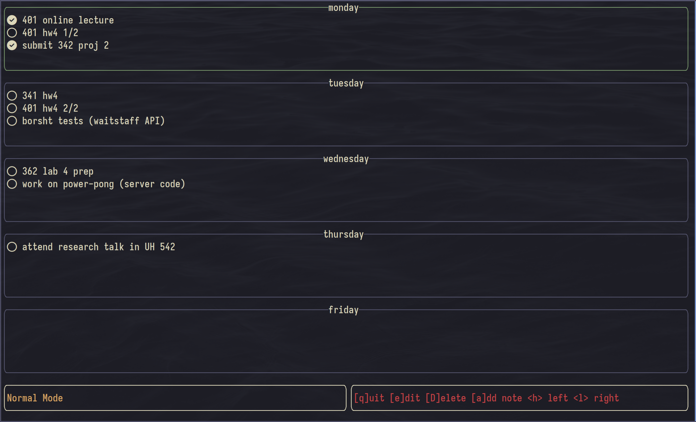

i worked on this project for about a year and a half with my research supervisor Pedram Rooshenas. initially starting as a project to fufill honor college requirements during spring 2024, i
really got a chance to bring this project where it is today when Professor Rooshenas invited me to continue
full time over the summer of 2024.
motivated by potential energy savings (among other things), spiking
neural networks take inspriation from biological neural networks, incorporating time into the
model and
propagating signals on neuron "spikes" rather than on each propagation cycle.
for technical information, please see my cv for the short of it, or my github repository for more details
i worked on this project with a good friend michael oltman for
cs342: software design.
(not to brag but to brag) micheal an i were exempted from the final exam for placing in the top three
projects in the class!
i encourage you to check out all the screenshots on the respository and even give it a run if you have the time.
we put a lot of time drawing all the pixel art with the amazing open-source software aseprite so go check it out! connect-four is a solved game so the ai is,,
pretty hard.
this is was my very first project in Rust and i honestly still use this nifty little note-taker almost
every day.
i used to use google keep all the
time, but hated opening my browser to quickly jot down a todo. keepTUIt is a simple little
terminal user interface built with the amazing ratatui crate that lets
you create and edit notes in a similar style to google keep.

you can find more details and screenshots on my repository! however, you might notice that those
screenshots have a different colorscheme and layout? did i change those things and forget to update the
readme?
no! colors, layout, editor options, (and maybe even keybinds soon) are configurable via a
.toml file :)